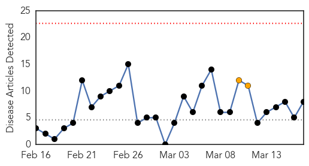

30 Day Trends
Web: 0 alerts, 2 warnings
Twitter: 0 alerts, 0 warnings
Top Articles:
- 0.996
- Measles cases climb in California prompting public health concern
- 0.975
- When Your Neighbours May Be Hazardous to Your Health
- 0.962
- Lehigh Valley News - Home
- 0.953
- California issues warning vs. measles
- 0.951
- Measles outbreaks ‘unusual’ but no cause for alarm, federal health agency says
- 0.922
- Students at Burnaby school warned of measles risk
- 0.644
- The foolish anit-vaccine cause: Rich Lowry
- 0.533
- Celebrity Refuses to Give Child Vaccines Due to Fear of Autism
Top Tweets:
-
No tweets found for Mar 17, 2014
Web/News Articles
Tweets

Article Locations